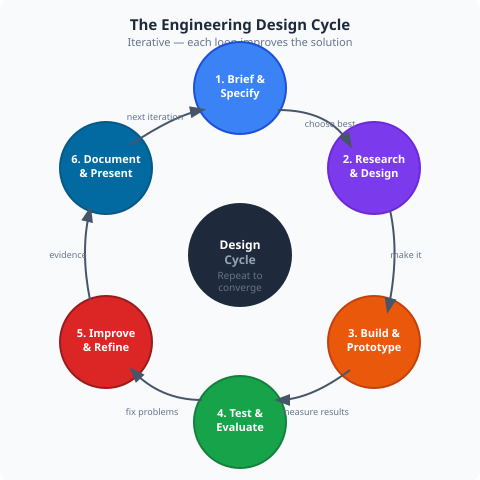

Critically evaluating your project outcomes, reflecting on what you learned, and communicating your work to different audiences.
🕔 75–90 min🎯 Group: Project🔌 Context: Your completed project
Theory
What is Critical Evaluation?

Evaluation means comparing your outcomes against your original specification and asking: did I succeed? Critical evaluation means being honest about where you fell short and explaining why — not just listing what went well.
Engineers who can accurately evaluate their own work are more valuable than those who can only report success. Identifying failure modes, understanding root causes, and proposing improvements is the core of engineering iteration.
Design
→
Build
→
Test
→
Evaluate
→
Improve
→
Design
This iterative cycle — design, build, test, evaluate, improve — never truly ends in a living engineering project. Each iteration narrows the gap between the current state and the ideal.
Theory
Writing a Strong Evaluation
A strong evaluation has three components for each specification point:
Component
What to include
Weak example
Strong example
Outcome
Did you meet the spec? By how much?
"The arm was accurate."
"J2 achieved ±0.3° repeatability, exceeding the ±2° spec."
Analysis
Why did you get this result?
"It worked well."
"Accuracy was high because the AS5600 encoder provides closed-loop feedback, eliminating accumulated step error."
Improvement
What would you do differently?
"I would make it better."
"Cycle time could be reduced by 30% by overlapping joint moves rather than moving one joint at a time."
Theory
Communicating to Different Audiences
The same project needs to be communicated differently depending on who is listening. This is a professional skill — engineers must explain complex technical work to non-technical managers, clients, and the public.
📋 Technical report
Full detail, evidence, diagrams. Audience: engineers, assessors. Use technical vocabulary correctly.
👥 Peer presentation
Live or recorded. Show the arm working. Explain key decisions. Handle questions.
🌐 Non-technical summary
One page, plain English. Explain what the system does and why it matters — no jargon.
🏆 BTEC assessment note: For merit and distinction criteria, your evaluation must be critical — it must identify weaknesses and suggest specific, justified improvements. Simply listing what worked will not achieve higher grades.
Worksheet
Activity — Evaluate and Present Your Project
Complete these tasks to finalise your project and prepare for assessment.
Specification review: Return to the specification you wrote in Module 14. For each point, record the actual outcome (your test results from Module 15) and state pass or fail.
Written evaluation: For each specification point, write 2–4 sentences covering outcome, analysis, and improvement (use the table format from Theory 2 above as a guide).
Overall reflection: Write one paragraph (150–200 words) answering: What were the two most significant technical challenges you faced, and how did you overcome them?
Future development: Write three specific, justified improvements you would make if you had more time. For each, explain the engineering reason it would improve the system.
Presentation: Prepare a 5-minute presentation of your project. Include: what the arm was programmed to do, a live demonstration, two key results from testing, and one honest critique of your own work.
Non-technical summary: Write a half-page plain-English summary of your project, suitable for a parent, governor, or potential employer who has no engineering background.
💭
Evaluation Prompt — Programming Mode Choice
Write a paragraph addressing this question: "Which programming mode (Blockly, G-Code, or RAPID) was most effective for your project, and why? If you were building a pick-and-place system that needed to respond to the camera (pick the block the camera detects, not a pre-taught position), which mode would you use and what would need to change in either the app or the server to support it?"
A strong answer names specific advantages and limitations of the chosen mode, references actual observations from the project (e.g. "G-code was faster to edit when I needed to adjust a single position"), and proposes a technically plausible change for the camera-reactive scenario.
📐
Improvement Topic — 3D Model Calibration
Evaluate how accurately the 3D Visualisation model matched the physical arm's end-effector position during your project. Consider: did the model diverge from the physical arm at extreme joint configurations? Possible causes: joint flex under load, mechanical backlash, or inaccurate link lengths in the URDF.
A strong improvement proposal would be: "The URDF link lengths could be refined by commanding 10 known positions, measuring the actual end-effector XYZ with a ruler and reference frame, comparing to the FK-computed values, and adjusting the URDF until the error is below ±5 mm. The AS5600 encoders provide a second angle reference that could also be used to detect systematic backlash errors."
This demonstrates understanding of the URDF (Settings tab), the Kinematics tab, and the AS5600 hardware — an engineering improvement rooted in the specific system.
🎯
Live Demo Suggestion — Control Session Handover
For a memorable and technically impressive demonstration, show the control session handover:
Your computer has control — run a short automated sequence
A second student connects on a second laptop — show the "another client has control" status message on their screen
Demonstrate Force Take Control from the second laptop — your session is displaced and you are notified
The second student now commands the arm
This demonstrates a real distributed-system concept (mutual exclusion over a network) to examiners — not just "the arm moves to a position". It directly showcases knowledge from Module 9 (WebSocket architecture) and Module 13 (control session as an engineering control), and is unique to this specific system.
Evaluation Summary Table
Spec point
Target
Actual result
Pass/Fail
Key reason for outcome
So What?
Reflection as an Engineering Habit
The best engineers are those who treat every project — successful or not — as a learning opportunity. The practice of structured reflection (what worked, what did not, and why) is what separates engineers who improve continuously from those who repeat the same mistakes.
Professional engineering bodies (IMechE, IET, BCS) require evidence of continuing professional development (CPD) — ongoing learning and reflection — as a condition of membership. The habit starts here.
Final thought: When you started Module 1, you may not have known what a serial bus, a kinematic chain, or a PID controller was. Look at your project now. That distance is what engineering education is for.
🏅
Curriculum Complete
You have worked through all 16 modules — Foundation, Intermediate, Advanced, and Project. Well done.
Final Quiz
Check Your Understanding
1. A critical evaluation differs from a basic evaluation because it:
2. When presenting to a non-technical audience, the most important thing is to:
3. The engineering design cycle is best described as: